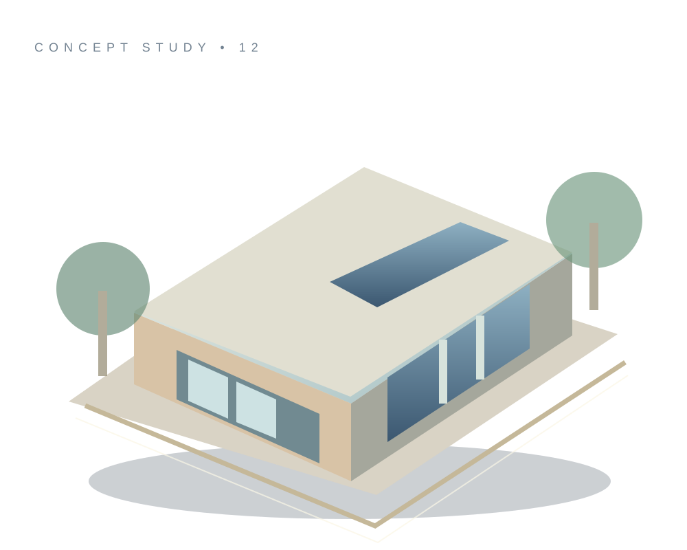

Illustrative demo
Serene Living Concept
Illustrative concept card showing how a future project portfolio could appear. Actual photographs and specifications are pending approval.
residentialExplore concept ↗
An editorial concept for carefully considered interiors. This sample illustrates a premium website experience using public business listing details and original concept visuals.
The buildings and interiors shown are illustrative, not confirmed work by this business.

A searchable project browser tailored to interior design. This is a layout demonstration only; actual portfolio work requires owner-supplied assets and approval.
Illustrative concept card showing how a future project portfolio could appear. Actual photographs and specifications are pending approval.
Illustrative concept card showing how a future project portfolio could appear. Actual photographs and specifications are pending approval.
Illustrative concept card showing how a future project portfolio could appear. Actual photographs and specifications are pending approval.
No concept cards in this category.
Rotate and zoom the concept presentation. A completed client project could replace this demonstration with an approved 3D model, floor plan or virtual tour.
Illustrative SVG rendered with CSS transforms, not a scanned real property model.
Introduce the studio or company with a tailored editorial brand presentation.
Let visitors browse approved case studies, services and carefully structured project details.
Make direct contact straightforward for UAE residents and international enquiries.
Public business details below are reproduced from a directory screening list and should be verified before publication.
Business WhatsApp contact has not been verified.